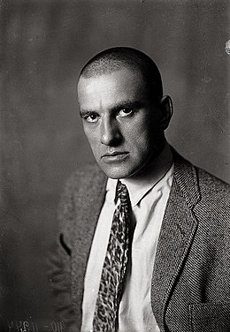

О Поэте
Владимир Маяковский родился в Грузии в 1893 году. Его отец служил лесничим в селе Багдади, позже семья переехала в Кутаиси. Здесь будущий поэт учился в гимназии и брал уроки рисования: с ним бесплатно занимался единственный кутаисский художник Сергей Краснуха. Когда волна первой российской революции докатилась и до Грузии, Маяковский — еще ребенком — впервые участвовал в митингах.
Владимир Маяковский интересовался не только поэзией и живописью. В 1913 году он дебютировал в театре: сам написал трагедию «Владимир Маяковский», сам поставил ее на сцене и сыграл главную роль. В этот же год поэт увлекся кинематографом — начал писать сценарии, а спустя год впервые снялся в ленте «Драма в кабаре футуристов №13» (картина не сохранилась).
